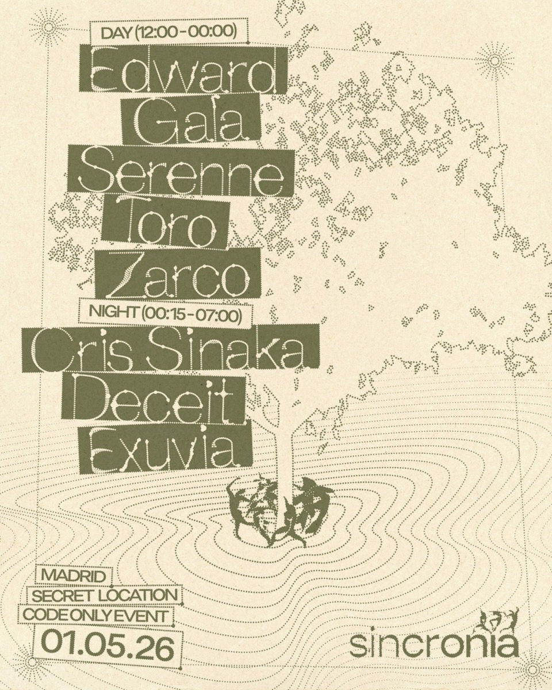
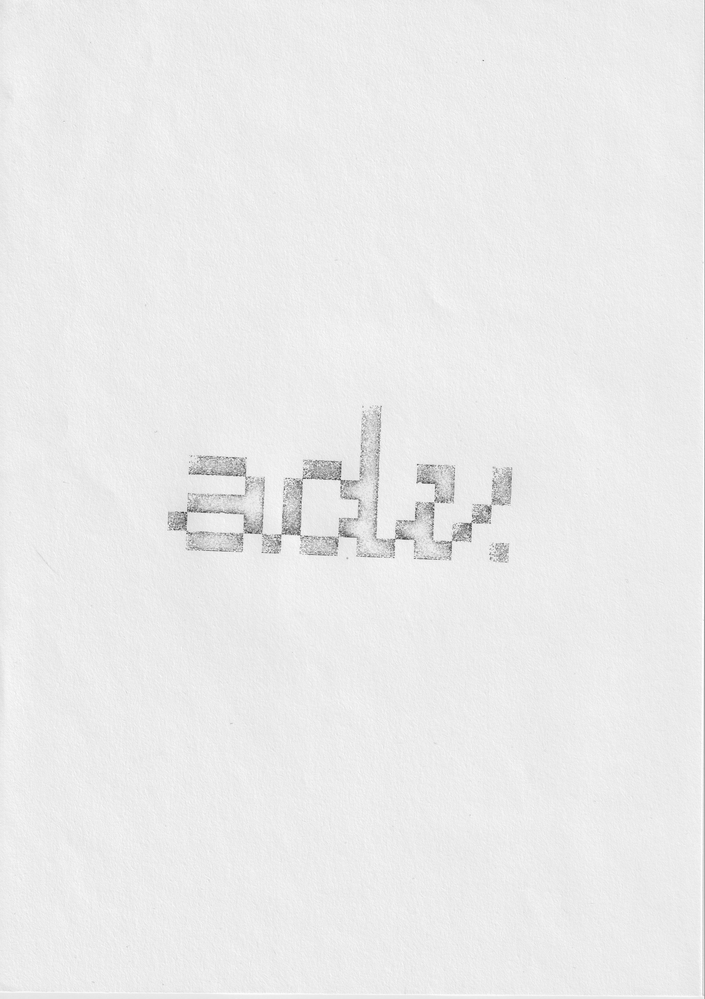
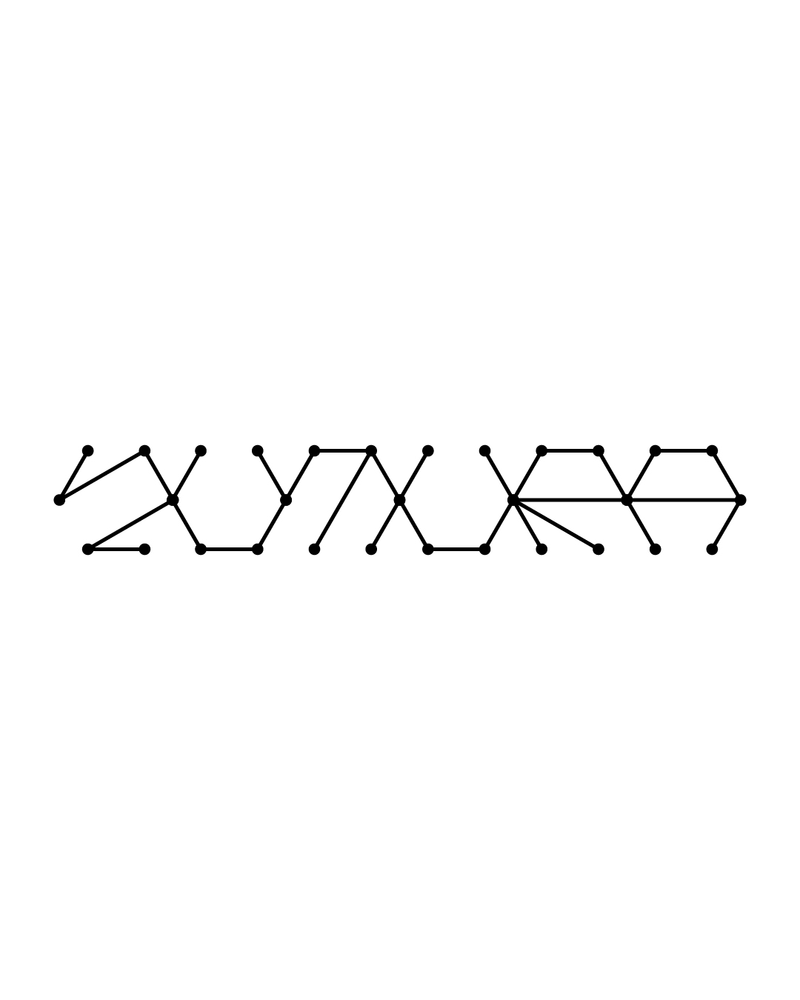
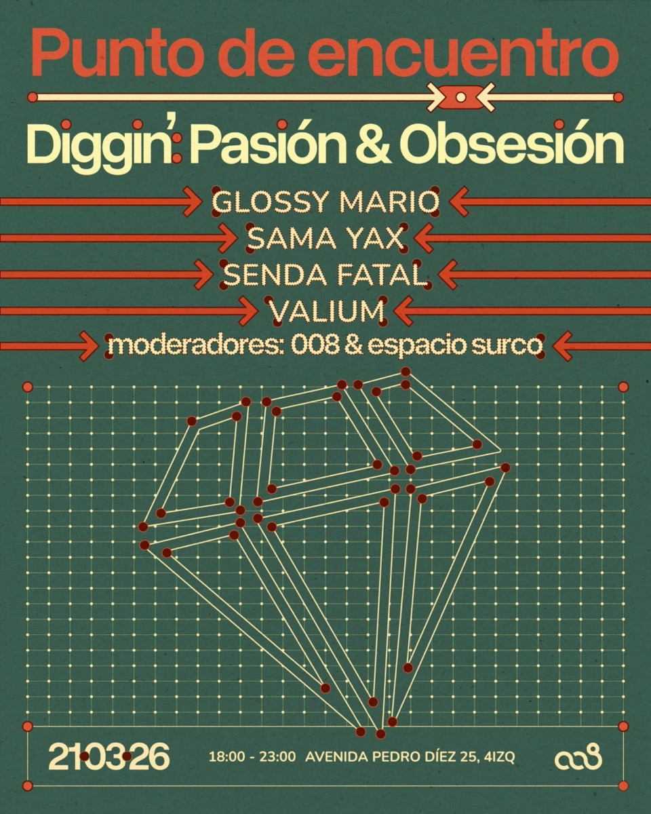
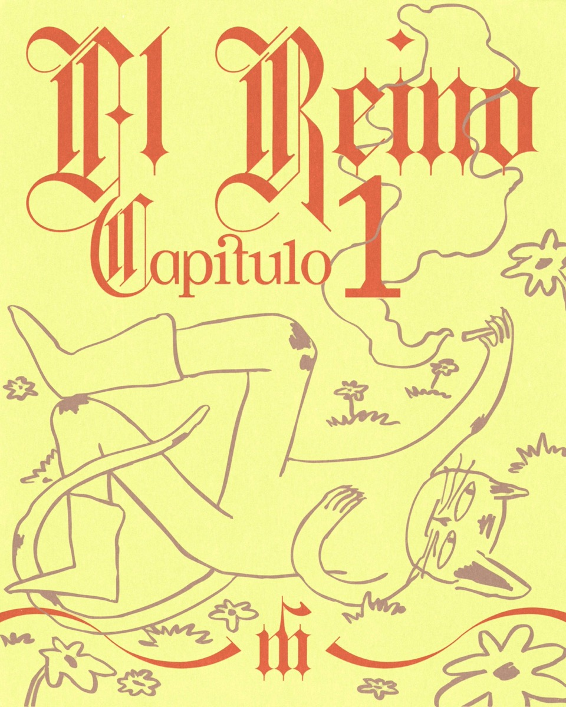
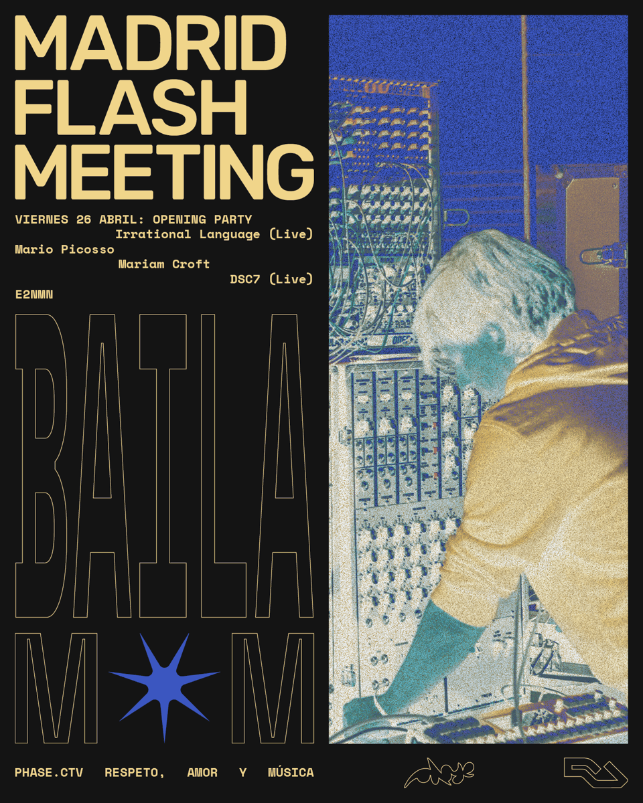
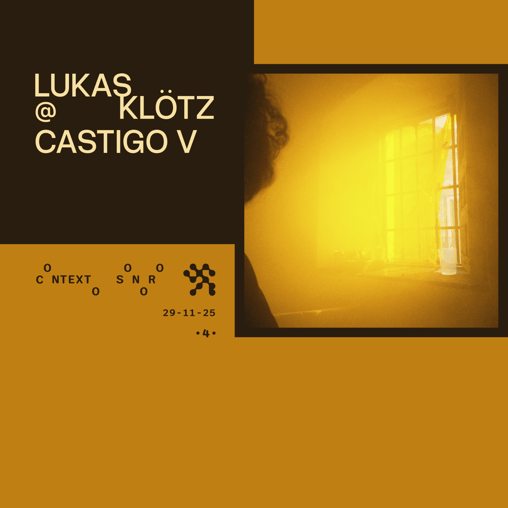
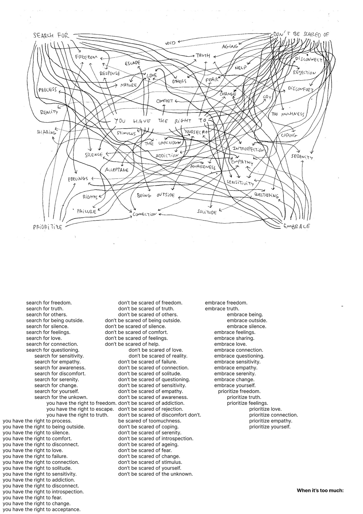

Sincronía
Visual identity for an electronic music event series built around the relationship between sound, bodies, landscape, and collective experience.

Visual identity for an electronic music event series built around the relationship between sound, bodies, landscape, and collective experience.

Visual identity for Adverb Collective, a project I curate and creatively direct together with @leenshem.

Type design for an upcoming project focused on live electronic music performances taking place in natural environments.

Poster design and video editing for OO8 Collective, a Madrid-based underground electronic music project I have been involved with since 2O21 and have creatively directed since 2O25.

Visual identity, creative direction, and worldbuilding for El Reino, an ongoing narrative project by the dj @matiz________ built around a cat and its adventures, with dj mixes as the soundtrack. Illustrations by @someonedrawsasha.

Visual identity and poster system for Madrid Flash Meeting, a series of events by the Madrid-based collective @phase.ctv focused on supporting underground electronic music culture.

Visual identity for Contexto Sonoro, a podcast series by the dj @lukasklotzzz featuring his own sets alongside guest mixes, recommendations, and artist promotion.

An interdisciplinary project questioning why everything feels like too much, responding to that overwhelming condition by doing too much as well. Developed together with Frederico Braga, Anastasiia Shalagaeva, and Clemens Wallrath. My contribution focused on video editing and conceptual development. Exhibited at Eight Gallery, Berlin.